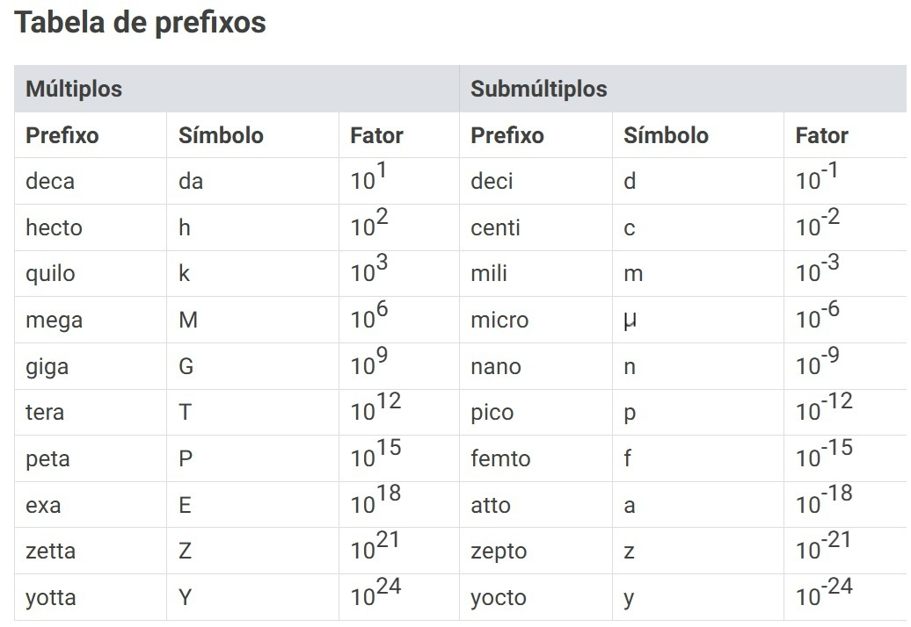

Múltiplos
Definição:
Múltiplos são unidades de medida maiores do que a unidade fundamental (base) de uma grandeza. Eles são obtidos multiplicando a unidade base por um fator maior que 1, geralmente potências de 10 positivas no Sistema Internacional de Unidades (SI).
Exemplo:
O prefixo quilo (k) tem fator 10³ (1000).
1 quilômetro (km) = 1000 metros (m).
Submúltiplos
Definição:
Submúltiplos são unidades de medida menores do que a unidade fundamental (base) de uma grandeza. Eles são obtidos dividindo a unidade base por um fator maior que 1, geralmente potências de 10 negativas no Sistema Internacional de Unidades (SI).
Exemplo:
O prefixo mili (m) tem fator 10⁻³ (0,001).
1 milímetro (mm) = 0,001 metro (m).
Tabela de Múltiplos e Submúltiplos
